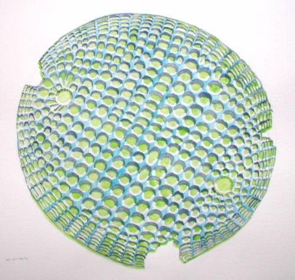
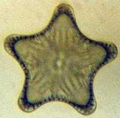
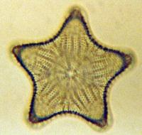
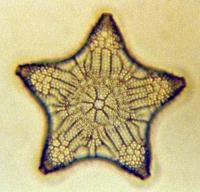
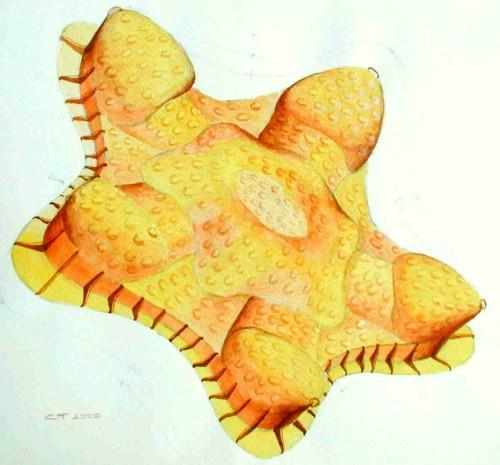

|
• HOME • WHAT IS THE PMS? • WHAT'S NEW • CONTACTING US • CLUB MEETINGS • LIBRARY • ADDRESS BOOK • LETTERS •SALES AND WANTS BALSAM POST COLOUR SUPPLEMENT•SPRINGTAILS• MISCELLANEOUS•RELATED SITES • |
Visualising Diatoms in Depth - Triceratum Pentacrinusby Chris Thomas
Some of the most beautiful subjects in microscopy are the diatoms, whether alive or prepared. With many, their beauty is clearly visible and in focus even at high magnification. These photograph well as can be seen in the Algal Image_Archive, darkfield images of diatoms or in the watercolour here. Other diatoms have quite a lot of depth, which means that large areas are our of focus.
A diatom on a slide by D E Dickinson of a strew from Gordons Road, New Zealand. PMS Box 95/7. Watercolour by CT
The problem is illustrated by the three pictures below of the diatom Triceratum pentacrinus from a slide made by Klaus Kemp. The diatom was actually photographed at seven different focal planes of which the bottom, mid and upper planes are shown here.
Triceratum pentacrinus photographed at bottom, mid- and upper focal plane 
An additional confusing feature arising from the differences in focus are the apparent rays on the diatom in the uppermost focal plane. These disappear at higher magnification and closer focussing. They appear to be an optical artefact created by groups of punctae (the knobbly bits on the surface of the diatom!) being separated from one-another by a slightly larger gap. A good way to visualise the three dimensional nature of such a diatom is to draw it. In the April 2000 issue of the 'Balsam Post', the paper publication of the Postal Microscopy Society I show how I drew a pen and ink version of Triceratum pentacrinus for the cover of the magazine. The subject fascinated me so much, that I also tried a stylised watercolour version in false colour which is shown below.
 Artists impression of the 3D nature of Triceratum pentacrisnus
If you think you are not good enough at drawing, do not be put off as even a rough sketch can give a better understanding of a subjects 3D nature in the minds eye. To reassure you, the Balsam post image took three attempts and the watercolour at least two tries! You can also see the faint pencil lines of the original planar layout of the diatom. The planar base was used as the basis for the projection so that the diatom looked as if viewed one side. I hope that this has shown you how illustration still has a powerful part to play in microscopy. By drawing a sample from a variety of different views you can significantly increase your understanding the subject being studied. Further illustrations and paintings of diatoms have been published on the web at this Micscape article or visit the artist Wim van Egmond's homepage. Another microscopy artist, specialising in the beauty of polarised light images is Gwyneth Thurgood. |
|
• HOME • WHAT IS THE PMS? • WHAT'S NEW • CONTACTING US • CLUB MEETINGS • LIBRARY • ADDRESS BOOK • LETTERS •SALES AND WANTS BALSAM POST COLOUR SUPPLEMENT•SPRINGTAILS• MISCELLANEOUS•RELATED SITES • |